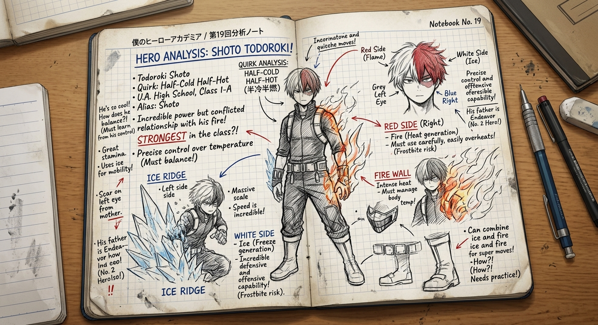

Katsuki Bakugo: Explosion Quirk
Nitroglycerin-like sweat output mechanics, recoil management, and aerial trajectory adjustments.

Ochaco Uraraka: Zero Gravity
Contact-activation limits, vestibular threshold management, and release vector physics.

Ingenium: Hybrid Exhaust Engine
Calf-muscle integration, exhaust turbine fuel flux, and maximum thrust RPM limits.

Shoto Todoroki: Half-Cold Half-Hot
Thermal equilibrium regulation, frostbite versus dehydration limits, and dual-side elemental flow.